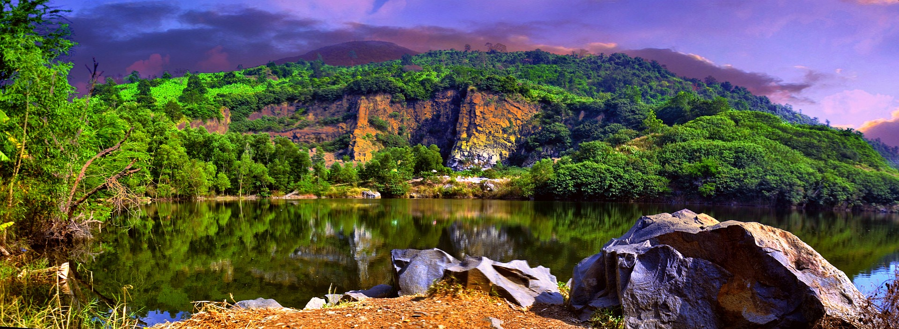

Familierejserne foregår individuelt for jeres familie, derfor bestemmer I, hvornår I vil rejse. Priserne er uden y til og fra destinationen, alt andet er inkluderet. Når I nder den rejse, der passer jer kontakter I os mht fly - så vil vi søge efter den bedste flyforbindelse til jer.
Alle vores familierejser kan tilpasses så de matcher jeres behov og ønsker.

VIETNAM
DAGSPROGRAM Dag 1 Afrejse fra Danmark Dag 2 Ankomst Hanoi Dag 3 Templer og familiebesøg. Hanoi. Dag 4 Familietid. Hanoi Dag 5 Ha Long Bugten Dag 6 Ha Long Bugten. Fly til Hoi An Dag 7 Badning. Hoi An Dag 8 Fiskelandsby og cykeltur. Hoi An Dag 9 Landsby og cykeltur. Hoi An Dag 10 Badning. Hoi An Dag 11 Hoi An. Fly til Ho Chi Minh City Dag 12 Ud ugt til Cu Chi tunellerne. HCMC Dag 13 Mekong-deltaet. Can Tho Dag 14 Marked i Can Tho. Afrejse Dag 15 Hjemkomst
SRI LANKA
DAGSPROGRAM Dag 1 Afrejse fra Danmark Dag 2 Ankomst. Colombo Dag 3 Colombo og videre til Habarana Dag 4 Halvdagsud ugt. Habarana Dag 5 Løveklippen. Hanarana Dag 6 Vandretur til små landsbybesøg og elefanter. Habarana Dag 7 Habarana - Kandu. Kokosplantager og krydd- erihaver Dag 8 Elefanter. Kandy Dag 9 Teplanteger. Kandy Dag 10 Og så til stranden. Mirissa Dag 11 Blåhvaler. Mirissa Dag 12 Mirissa Dag 13 Mirissa Dag 14 Hjemkomst
JORDAN
DAGSPROGRAM Dag 1 Afrejse fra København og ankomst Amman Dag 2 Amman Dag 3 Amman - Jerash - Amman Dag 4 Amman - Madaba - Wadi rum (ørken) Dag 5 Wadi rum - Aqaba Dag 6 Aqaba Dag 7 Aqaba Dag 8 Aqaba - Petra Dag 9 Petra - Det døde Hav Dag 10 Det døde Hav Dag 11 Det døde Hav Dag 12 Det døde Hav – Amman - København
MAROKKO
DAGSPROGRAM Dag 1 København – Marrakech Dag 2 Marrakech Dag 3 Marrakech Dag 4 Marrakech - Aït Ben Haddou - oasebyen Skoura Dag 5 Skoura - Sahara Dag 6 Sahara Dag 7 Sahara - Nakob - Tamnougalt Dag 8 Tamnougalt - Quarzazate Dag 9 Quarzazate - Marrakech Dag 10 Marrakech - afrejse Rejsen kan forlænges med ophold ved stranden i Agadir.